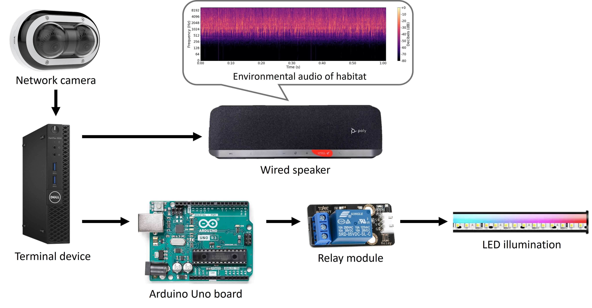
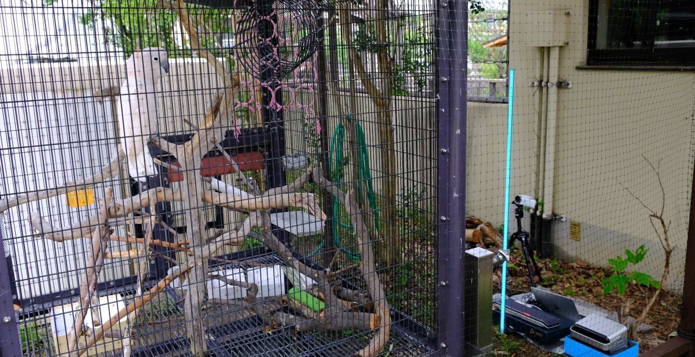

CyBirdwood: Multimodal Co-Entertainment Experience with A Captive Cocaktoo
Keywords: Animal-Computer Interaction; Animal Enrichment; Internet of Things
• 2022/10 - 2023/09
CyBirdwood is an urban-aviary coentertainment experience system designed for a captive salmon-crested cockatoo in Kyoto City Zoo, Japan.
This project explores the potential of interactive technologies to enhance the welfare and engagement of captive animals through multimodal stimuli.
Concept
Background
For socially complex species such as parrots, environmental enrichment is crucial for improving quality of life in captivity.
Previous work in the Animal-Computer Interaction (ACI) field has demonstrate that parrots are capable of interacting with digital interfaces and open possibilities for multimodal communication and enrichment design.
However, existing approaches face notable limitations: many rely on prolonged training by human caretakers, focus primarily on unimodal stimuli, or lack flexibility and scalability for customizing real-time interactions. These constraints limit the practical applicability of systems, especially in zoo contexts where direct visitor-animal interaction is irregular or logistically challenging.
Question to Ask
- How can we develop a remotely accessible system for multimodal engagement with avian species?
- Can external audiovisual stimuli effectively engage a cockatoo's attention?
- During interaction, are unimodal or multimodal stimuli more effective in maintaining engagement?
Technical Approach
A demo system was prototyped with three primary components: avian interaction module, mobile application, and the server.
- Engagement trigger: web cameras with video motion detection program
- Multisensory cues: natural environmental audio (waterflow & bird calling), continuous blue light (470 nm)
- Live monitoring & stimuli management: online mobile application

System diagram of the prototyped avian interaction moduleOutputs
Test in Zoo
- 3 days in Kyoto City Zoo (June 2023)
- Free-to-engage setting for the cockatoo
Findings
- Proximity-triggered and stimuli-based design enabled bird participant to be an active agent in the interaction loop.
- Auditory stimuli (natural environmental sound) were particularly effective in encouraging engagement.
- Single-modal visual stimuli (470nm blue light) provided negligible effect.
Publication
- H. Hong, Z. Sui, L. Uesaka, H. Kudo, H. H. Kobayashi. (2025)
"Exploring the Cockatoo's Engagement with Audiovisual Stimuli: An Inclusive Avian-IoT Interaction Design",
In Proceedings of the ACM 12th International Conference on Animal-Computer Interaction, (ACI '25).
Association for Computing Machinery, New York, NY, USA, Article 12, 1-9. doi: 10.1145/3768539.3768553
[Honorable Mention Award]
Gallery
